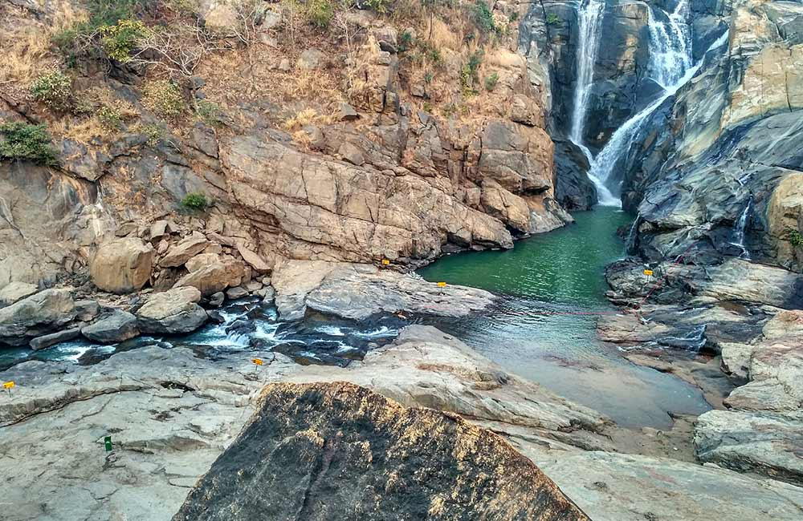

Hot
Patratu, Ranchi
If long winding roads overlooking a breathtaking valley is what makes your holiday perfect, then you do not want to miss the Patratu Valley! Perhaps the best stretch you can find in the state of Jharkhand, the drive from Ranchi to the valley is every bike lover’s delight. The S-turns, hairpins and swooping corners, and the stunning vistas make the drive all the more exciting. You must stop at the Patratu Dam which is just as breathtaking and makes a great spot for picnicking.
Hot
Birsa Zoological Park, Ranchi
The Birsa Zoological Park is a great place to visit if you are travelling with children. The park is home to a wide variety of faunal species including tigers, lion and deer. If you are a wildlife enthusiast, you can get all kinds of information about the wildlife of the region from here and even become a part of the animal adoption program. The zoo has a small canteen at the entrance which serves snacks and beverages.
Tagore Hill,Ranchi
Tagore Hill owes its name to the great poet Rabindranath Tagore, who is believed to have spent a lot of time here. Also known as Moradabad Hill, this spot is perfect to enjoy and admire the beautiful views of the city and the clear blue skies. The hill is also very popular among adventure seekers who can try rock climbing and trekking here. At the base of the hill is the Ramakrishna Mission Ashrama, the centre of Agrarian Vocational Institute and Divyayan.
Jagannath Temple,Ranchi
The first thing that strikes you about Jagannath Temple is its resemblance to the temple in Puri. Located about 10 km from the main city, this 17th-century shrine is one of the most popular places in the city and is thus visited by innumerable tourists. The best time to visit the temple is undoubtedly during the Ratha Yatra which is held every year in the months of June-July. As the temple is built on a hill, you will have to climb several stairs to reach there. After seeking blessings, don’t forget to spend a few minutes enjoying the splendid views of the city from the top.

Dassam falls,Ranchi
Located some 40 odd kilometres from the city, Dassam falls is one of the most popular spots for tourists in Jharkhand. The cascading waters of the fall are mesmerizing and a treat for photographers and nature lovers. A striking feature of this waterfall is when it is at its maximum glory, you can also see 10 streams of water falling into the plunge pool. Owing to the gradual rise in tourism, a number of restaurants and clean restrooms have come up in the area, making the visit far more convenient than it was earlier.
Sun Temple,Ranchi
The first glimpse of the Sun Temple in Ranchi is absolutely captivating. Situated on a hilltop, the temple is constructed in the typical Sun temple architecture depicting a giant chariot with 18 wheels, pulled by seven horses. Other than the Sun God, the shrine holds idols of many other Hindu Gods and Goddesses and also has a pond within its complex which is considered sacred. The temple is visited by a number of tourists every day and makes for one of the most popular places to see in Ranchi.